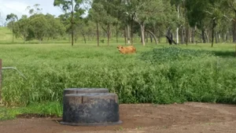

EP 174 · Goodness Exchange
Healing the Planet by Transforming Sand Back to Soil
(A Complex Living Organism)
Rodger Savory joins the Goodness Exchange to explain how sand becomes living soil again.
Watch on YouTube
Rodger Savory on soil, water, cattle and health — every talk and interview in one place.
The full resource library from fixdeserts.com — click through to watch on YouTube.
Rodger Savory joins the Goodness Exchange to explain how sand becomes living soil again.
Watch on YouTube
Introducing the Bonsmara cattle we'll be using in the desert. That's Pretty Neat!
Watch on YouTube
Despite a drought — 8 inches of rain in the last year and no rain for 9 weeks — the land stays moist.
Watch on YouTube
Rodger and Stefan on positive vs negative stress, steel implements vs herd effect — and why #hoofshape matters.
Watch on YouTube
How do we turn desert to grassland? Here is how we've done it in Australia, Africa and around the world.
Watch on YouTube
“Turning Deserts Into Grasslands,” with Rodger Savory.
Watch on YouTube
THE (LIVING) SOIL — nurturing healthy soils to prevent both flooding and drought.
Watch on YouTube

“WATER” with Rodger Savory — can we avoid floods and droughts?
Watch on YouTube
Savory Holistics LLC — Planet Action Studio Talk.
Watch on YouTube
What if there was a way to turn the desert into a grassland? Grazing animals are key to a healthy future.
Listen to the episode